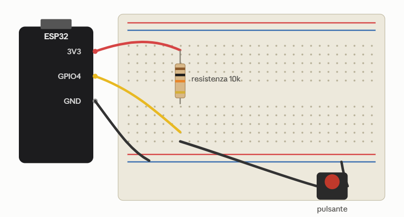

Home / Scheda 5 — Esempi pratici
Esempi pratici
Dalla teoria al mondo fisico. Ogni esempio è autonomo e include componenti, cablaggio
(quando serve) e codice commentato. Puoi eseguirli con
mpremote connect COM3 run esempio.py.
1. Blink del LED integrato
Il classico "Hello World" dell'hardware. La maggior parte delle schede ESP32 ha un LED integrato collegato al GPIO2 (fai riferimento alla serigrafia della tua scheda: su alcune varianti il LED è su un pin diverso o è un LED RGB indirizzabile).
Componenti
from machine import Pin
import time
led = Pin(2, Pin.OUT)
while True:
led.value(not led.value()) # inverte lo stato attuale
time.sleep(0.5) # attesa di 0,5 secondiCosa succede
Pin(2, Pin.OUT)configura il GPIO2 come uscita.led.value(not led.value())legge il valore e lo inverte: acceso → spento → acceso.time.sleep(0.5)introduce un ritardo in secondi (accetta anche frazioni).
mpremote connect COM3 run blink.pyPer fermarlo: Ctrl+C. Con run lo script non viene salvato sulla scheda: sparisce al reset.
Copia il file come main.py e verrà eseguito automaticamente ad ogni avvio: mpremote connect COM3 fs cp blink.py :main.py.
2. LED su breadboard
Ora un LED esterno, per imparare il cablaggio. Serve una resistenza in serie: senza di essa il LED (e potenzialmente il pin) può danneggiarsi.
Componenti
La gamba più lunga è l'anodo (+), quella più corta è il catodo (−). Da collegare: anodo verso il GPIO, catodo verso GND.
Cablaggio (in ordine)
- Stacca l'USB prima di cambiare i fili.
- Inserisci il LED sulla breadboard: gamba lunga e gamba corta su due file (colonne) diverse.
- Collega il GPIO2 della ESP32 a un'estremità della resistenza da 220 Ω (filo giallo).
- Collega l'altra estremità della resistenza alla stessa fila della gamba lunga (+) del LED.
- Collega la gamba corta (−) del LED al pin GND della ESP32 (filo nero).
- Controlla la catena: GPIO2 → resistenza → anodo → LED → catodo → GND.
- Ricollega l'USB ed esegui lo script: il LED lampeggia.
Doppio controllo prima di alimentare: un corto tra 5V/3.3V e GND può danneggiare la scheda. Ogni GPIO può erogare in sicurezza ~40 mA.
Il codice è identico al blink: cambia solo il pin se scegli un GPIO diverso. Ad esempio, su GPIO2:
from machine import Pin
import time
# Cambia 2 con il GPIO a cui hai collegato la resistenza
# (evita i pin della flash: 6-11, 16, 17)
led = Pin(2, Pin.OUT)
while True:
led.on() # 3.3 V sull'anodo: LED acceso
time.sleep(1)
led.off() # 0 V: LED spento
time.sleep(1)led.on() / led.off() sono scorciatoie equivalenti a led.value(1) / led.value(0).
3. Dissolvenza PWM (bonus)
Con lo stesso circuito puoi far variare la luminosità modulando il duty cycle
del PWM. Il modulo è machine.PWM.
from machine import Pin, PWM
import time
led = PWM(Pin(2), freq=1000) # 1 kHz
while True:
for duty in range(0, 1024, 8): # dissolvenza in
led.duty(duty)
time.sleep_ms(5)
for duty in range(1023, -1, -8): # dissolvenza out
led.duty(duty)
time.sleep_ms(5)Promemoria dalla teoria: aumentando freq fino a 40 MHz, la risoluzione del duty (qui 0–1023) diminuisce.
4. Deep sleep e risveglio con pulsante
Il deep sleep riduce al minimo i consumi. Questo esempio mette la scheda a dormire e la risveglia premendo un pulsante sul GPIO4.
Componenti
Il pulsante collega il GPIO4 a GND; il pull-up interno mantiene il pin alto quando il pulsante è rilasciato.
import machine
import esp32
pin = machine.Pin(4, machine.Pin.IN, machine.Pin.PULL_UP)
# Risveglio quando il pin va a livello basso (pulsante premuto)
esp32.wake_on_ext0(pin=pin, level=esp32.WAKEUP_ALL_LOW)
print("Vado in deep sleep, premi il pulsante su GPIO4 per svegliarmi")
machine.deepsleep()Come funziona
machine.Pin(4, Pin.IN, Pin.PULL_UP)imposta il GPIO4 come ingresso con pull-up interno.esp32.wake_on_ext0(...)configura il risveglio da segnale esterno (WAKEUP_ALL_LOW= sveglia su livello basso).machine.deepsleep()spegne la scheda fino al risveglio; al risveglio è un reset completo.

step4/schema.png).Se preferisci un risveglio dopo un tempo fisso in millisecondi:
machine.deepsleep(10000) dorme 10 secondi e poi riparte da capo.
Dopo il deep sleep l'ESP32 esegue un reset completo. Usa
machine.reset_cause() per distinguere accensione e risveglio, e
esp32.gpio_deep_sleep_hold(True) (con hold=True sui pin)
per mantenere i livelli logici durante il sonno.
5. Web server con Microdot
Trasformiamo l'ESP32 in un piccolo server web. Flask non gira su MicroPython: usiamo Microdot, che ha una sintassi molto simile.
Requisiti
- Firmware MicroPython flashato (scheda 2).
- File
microdot.pycopiato sulla scheda. - Rete Wi-Fi a 2.4 GHz (scheda 3).
from microdot import Microdot
import wifi_config
wifi_config.connect_wifi("NOME_RETE", "PASSWORD_RETE")
app = Microdot()
@app.route('/')
def index(request):
return '<html><body><h1>CIAO A TUTTI!</h1></body></html>', \
200, {'Content-Type': 'text/html'}
app.run(port=80)mpremote connect COM3 fs cp web_server.py :web_server.py
mpremote connect COM3 run web_server.py
Dopo l'avvio lo script stampa l'indirizzo IP assegnato (da wlan.ifconfig()):
apri quell'indirizzo dal browser di un dispositivo collegato alla stessa rete Wi-Fi.
Variante con template HTML
Invece di restituire una stringa, Microdot può renderizzare un file template. Nel repository
è presente step3/templates/index.htm:
from microdot import Microdot
from microdot.utemplate import Template
app = Microdot()
@app.route('/')
def index(request):
return Template('index.htm').render(nome='Mondo')Flask richiede CPython completo; Microdot è un micro-framework leggero con API simili
(rotte, request, response) e gira su MicroPython. Il repository lo include come libreria
sorgente completa in step3/microdot/.
Conclusione e prossimi passi
Hai percorso l'intero stack: dalla teoria dell'hardware alla prima applicazione in rete. Da qui puoi esplorare:
Sensori I2C/SPI
Temperatura, umidità, display OLED: inizia con i2c.scan().
Controllo remoto
Aggiungi rotte a Microdot per accendere/spegnere un LED dal browser.
Basso consumo
Combina deep sleep e Wi-Fi per nodi a batteria.
MQTT / Cloud
Pubblica i dati verso broker o piattaforme IoT.